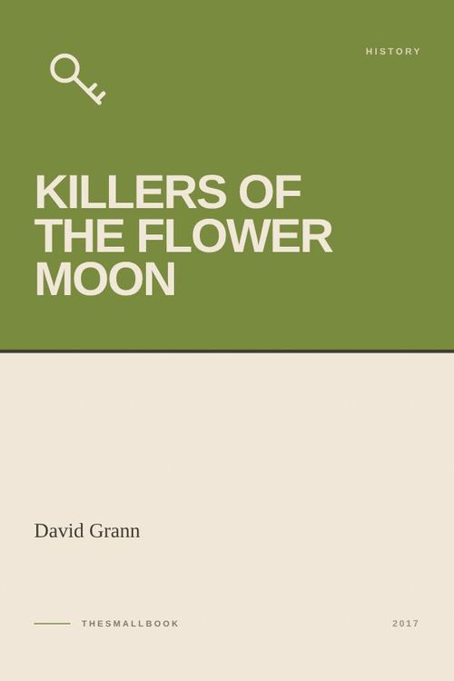
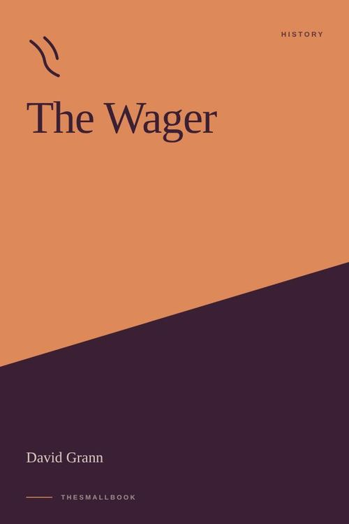

Library › Authors › David Grann
Books by David Grann
David Grann has 2 books in the library. Every book here is read down to the big idea, the lessons, the lines worth keeping and the actions worth taking. Start with the summary, then buy the full book if it earns a place on your shelf.

Killers of the Flower Moon
2017 · 11 min · 8 lessons
David Grann reconstructs the Osage murders of the 1920s, when dozens of wealthy Osage people were killed for their oil headrights.
The Osage were the richest people per capita in the world in the 1920s, and being rich made them targets. Grann follows the killings and the birth of the FBI's investigative methods, and the deeper story is a system in which guardianship laws let white administrators control Indian money. The murders were not an aberration; they were the logical expression of a legal arrangement.
Lessons in the summary
- The Headrights
- Guardianship
- The Killings
- The Doctor and the Poison
- The Bureau Arrives
- The Confession
- The Trial
- What Was Never Recovered
Lines worth keeping
- The murders were committed by neighbours, doctors, lawyers and husbands, and the law made it easy.
- Guardianship turned wealth into a reason to be killed.
- The investigation that followed was the making of a federal police power.

The Wager
2023 · 11 min · 8 lessons
David Grann reconstructs the wreck of the Wager and the competing accounts its survivors told, each one written to save its author.
The Wager broke apart off Patagonia in 1741, and the survivors split into two groups who returned with incompatible stories. Grann's real subject is testimony: how people narrate catastrophe to protect themselves, and how empire prefers the version that flatters it. The book is an adventure that turns into an inquiry into truth telling.
Lessons in the summary
- The Ship
- The Wreck
- The Island
- The Mutiny
- Two Voyages Home
- The Court Martial
- The Accounts
- Who Gets to Say
Lines worth keeping
- The survivors did not agree on what happened, and each account was written for a court.
- Empire needs heroes, and the record is edited to supply them.
- Under enough pressure, the question of who is civilised becomes the only question.
Questions David Grann helps answer
Read nearby authors next
- Bill Bryson 2 books
- Isabel Wilkerson 2 books
- Ramachandra Guha 2 books
- Siddhartha Mukherjee 2 books
- Walter Isaacson 2 books
- William Dalrymple 2 books
- A.L. Basham 1 book
- Akio Morita 1 book
Questions David Grann helps answer
Where should I start with David Grann? Start with Killers of the Flower Moon: David Grann reconstructs the Osage murders of the 1920s, when dozens of wealthy Osage people were killed for their oil headrights.